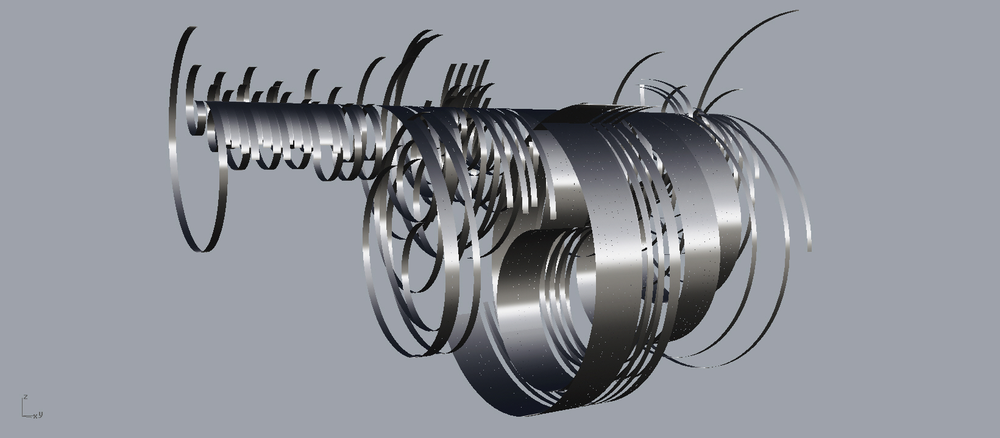

Sound Insight
Look, it's music!
Music is a compelling experience for many. It feels beautiful, organic, creative, and emotional. But it doesn't stop there. From the science of sound waves to the patterns we tap our feet to, music can be described and explained mathematically. So I wondered - how would music look if we represented some of these musical maths visually? Let's find out!
All sounds are waves that vibrate at varying frequencies. The qualities of the wave, such as frequency, steadiness, and amplitude determine how it sounds to us. In music, there are specific frequencies we label as notes and specific ratios of frequencies that these notes form. We've discovered that we usually like nice simple ratios, and these are what make up the 12 tone Western music
An octave, for example, consists of any two notes where one note has exactly twice the frequency of the other. An example would be middle C and the C above it. These notes have a 2:1 relationship, which you can think of as two high Cs fitting perfectly into the space of Middle C. This relationship is exponential.
But there are 12 tones in an octave, and each note has some kind of ratio relationship to all the other notes. The possible ratios are 2:3, 3:4, 1:7 etc, and are called intervals. When played in succession, it's called a melody, and when played together, it's called harmony. If we were to represent these possibilities in the same way, it would look like this:
In the final version of Sound Insight, I've represented each pitch as a circle, where the radius corresponds to frequency (a smaller radius means a higher frequency like in the above graph)
But a note is more than a pitch. It's a pitch combined with a duration and placement in time. In written music, a quarter note is worth 1 count, and is a quarter of a whole note, worth 4 counts. Measures break music into phrases with a specific number of counts each. But these counts can be broken down any way. For measures with 4 counts (which is often) you could have 1 whole note, or 4 quarters, or 1 half and 4 eighth notes.
Let's think of it like slices of pie. We set each pitch as a circle, with the duration corresponding to the circumference around the circle. So a half note would be a semicircle. Here's an example of arcs with their actual musical notation:
Remember we talked about measures? For each string of notes, they attach tangentially to the end of the previous note. But at the measure mark, they start at the original point. Measures are often slightly different yet similar, with this we can see how the patterns differ and change over time.
The pictures you're seeing are snippets from a song I wrote called Finale. Want to listen to the snippets individually? *Incorporate below each picture* Also check out the full version of the piece in CAD, and listen to the full song!
I also thought it would be interesting to not start over with measures, and just see how the song progresses as one giant loop. After all, everything is in a comparing relationship and a continuing relationship all at once!
Is my visualization perfectly accurate? Haha, how could it be? But it's an exploration and I hope gives a little insight into visualizing the mathematic relationships in music.
P.S. I've also written other songs if you want to check them out:
